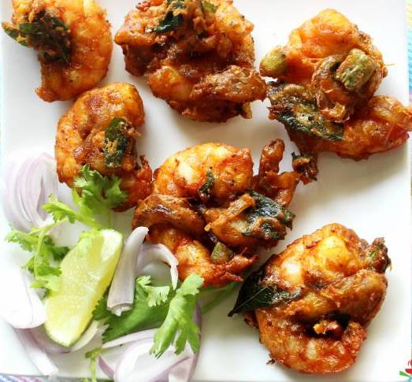

SHRIMP PAKORA

Incredients
- 1 pound (about 450g) medium-sized shrimp, peeled and deveined
- 1 cup chickpea flour (besan)
- 2 tablespoons rice flour
- 1 teaspoon ginger-garlic paste
- 1 teaspoon red chili powder
- 1/2 teaspoon turmeric powder
- 1 teaspoon cumin powder
- 1 teaspoon coriander powder
- 1/2 teaspoon baking soda
- Salt to taste
- Water (as needed to make a thick batter)
- Oil for deep frying
- Fresh coriander leaves for garnish
- Lemon wedges for serving
Directions
- Step 1: Prepare the Shrimp
- Ensure the shrimp are cleaned, peeled, and deveined. Pat them dry with a paper towel.
- Step 2: Make the Batter
- In a mixing bowl, combine chickpea flour, rice flour, ginger-garlic paste, red chili powder, turmeric powder, cumin powder, coriander powder, baking soda, and salt.
- Gradually add water and whisk to make a thick, smooth batter without lumps.
- Step 3: Coat the Shrimp
- Heat oil in a deep frying pan over medium-high heat.
- Dip each shrimp into the batter, ensuring it is well-coated.
- Step 4: Fry the Shrimp Pakoras
- Carefully drop the coated shrimp into the hot oil one by one.
- Fry until the pakoras are golden brown and crisp. Turn them for even cooking.
- Use a slotted spoon to remove the shrimp pakoras and place them on a paper towel to absorb excess oil.
- Step 5: Garnish and Serve
- Garnish the shrimp pakoras with fresh coriander leaves.
- Serve hot with lemon wedges and your favorite dipping sauce.